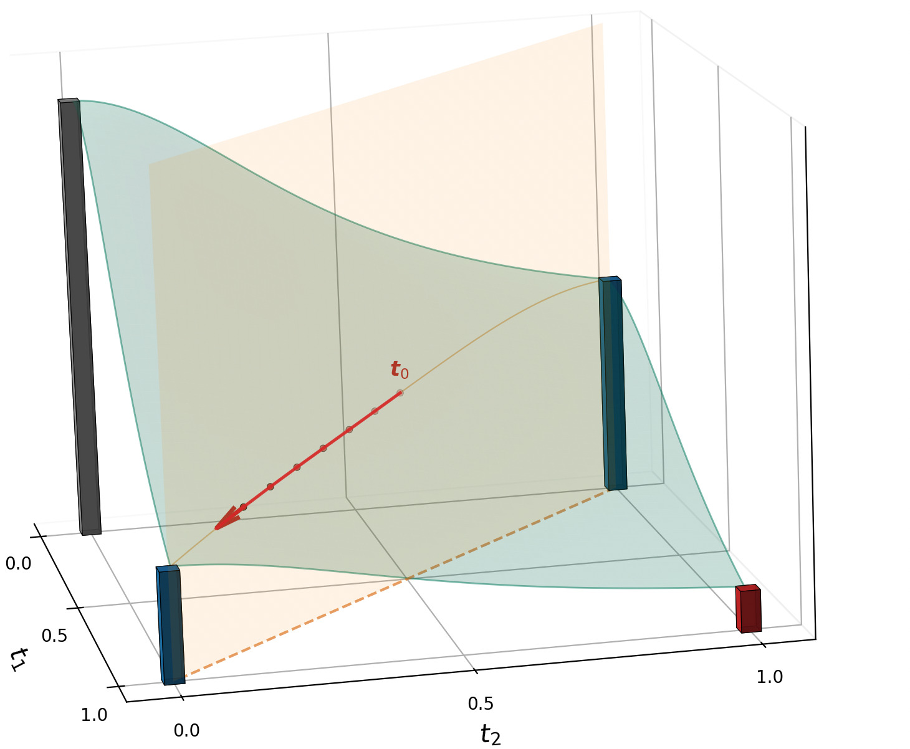
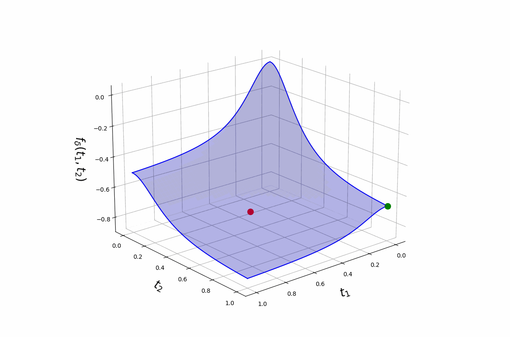

Homotopy Frank-Wolfe on the polytope
Linear minimisation oracle, no projections
Envelope gradient
The outer problem \[\min_{\boldsymbol{t} \in \mathcal{T}_k} f_\delta(\boldsymbol{t})\] is a smooth optimisation, but \(f_\delta\) is itself the value of an inner minimisation over \(\boldsymbol{\beta}\): recall that \[ f_{\delta}(\boldsymbol{t}) \;=\; \min_{\beta_0,\,\boldsymbol{\beta}}\; \Biggl[ -\tfrac{1}{n}\,\ell\bigl(\beta_0,\;\boldsymbol{t} \odot \boldsymbol{\beta}\bigr) \;+\; \delta \sum_{j=1}^{p} \bigl(1 - t_j^{2}\bigr)\,\beta_j^{2} \Biggr]. \]
Differentiating it directly would mean tracking how \(\hat{\boldsymbol{\beta}}(\boldsymbol{t})\) moves as \(\boldsymbol{t}\) changes — a chain through the inner solver.
The envelope theorem (Danskin) sidesteps this. Because \(\hat{\boldsymbol{\beta}}(\boldsymbol{t})\) is optimal for the inner problem, those derivative terms cancel, and the gradient of \(f_\delta\) has a closed form in terms of \(\hat{\boldsymbol{\beta}}(\boldsymbol{t})\) alone:
\[ \boxed{\;\; \bigl[\nabla f_{\delta}(\boldsymbol{t})\bigr]_j \;=\; -\,\frac{2\,\delta\,\hat\beta_j(\boldsymbol{t})^{2}}{t_j}. \;\;} \]
In practice, one glmnet call returns the effective coefficients \(\hat{\boldsymbol{\xi}}(\boldsymbol{t}) = \boldsymbol{t} \odot \hat{\boldsymbol{\beta}}(\boldsymbol{t})\) (the reparameterisation that makes the inner problem a standard ridge GLM). We then recover \(\hat{\beta}_j(\boldsymbol{t}) = \hat{\xi}_j(\boldsymbol{t}) / t_j\) before plugging into the gradient. No implicit differentiation through the inner solver.
The Homotopy Frank-Wolfe iteration
At iterate \(\boldsymbol t^{(i)}\) with scheduled curvature \(\delta_i\):
- Linear minimisation oracle (LMO):
\[ \boldsymbol s^{(i)} \;\in\; \arg\min_{\boldsymbol u \in \mathcal{T}_k} \langle \nabla f_{\delta_i}(\boldsymbol t^{(i)}),\,\boldsymbol u\rangle \;\;\Longleftrightarrow\;\; \boldsymbol s^{(i)} = \text{vertex with the $k$ smallest entries of } \nabla f_{\delta_i}(\boldsymbol t^{(i)}). \]
Step: \(\boldsymbol t^{(i+1)} = (1 - \alpha)\,\boldsymbol t^{(i)} + \alpha\,\boldsymbol s^{(i)}.\)
Iterate until \(\boldsymbol t^{(i)}\) converges to a vertex.
Why no projections
The cardinality polytope is a combinatorial set; projecting onto it is itself a hard problem. Frank-Wolfe avoids the projection — every step just requires the linear minimisation oracle, which is a sort.
Initialisation and the homotopy fix
Why does the iteration need a schedule \(\delta_i\) at all? Because a fixed \(\delta\) doesn’t work.
Fixed \(\delta\) traps initialisation. Running the iteration above at a single, large \(\delta\) does drive \(\boldsymbol{t}\) to a corner. However, due to the concave landscape of the objective at large \(\delta\), the corner you land on highly depends on where you start.

Homotopy fixes it. Start at small \(\delta_0\) where \(f_\delta\) is (near) convex, so descent is well-behaved everywhere; then grow \(\delta\) along a schedule \(\delta_0 < \delta_1 < \cdots\). The landscape deforms continuously from smooth to peaked-at-vertices, sliding the iterate into an optimal corner rather than the nearest one.

The \(\delta\) schedule
Two practical questions: what schedule, and how large does \(\delta\) ultimately need to be?
Geometric growth, warm-started. A geometric ladder works well:
\[ \delta_{i+1} \;=\; r\,\delta_i, \qquad r > 1, \qquad i = 0, 1, \ldots, N-1. \]
Each Frank-Wolfe step is warm-started from the previous \(\boldsymbol t^{(i)}\), so the iterate drifts smoothly along the deforming landscape rather than restarting from scratch at every \(\delta_i\).
Concavity threshold (Mathur, Liquet, Muller, Moka 2026). There is an explicit \(\delta^\star\) above which \(f_\delta\) is concave on \([0, 1]^p\), so every minimiser on the polytope \(\mathcal{T}_k\) is a binary vertex:
\[ \delta^\star_{\text{logistic}} \;=\; \frac{\nu_{\max}}{8n}, \qquad \delta^\star_{\text{multinomial}} \;=\; \frac{\nu_{\max}}{4n}, \]
where \(\nu_{\max}\) is the largest eigenvalue of \(X_S^\top X_S\) on a feasible support \(S\). The schedule only needs to terminate at \(\delta_N \ge \delta^\star\).
Why the schedule converges
Two results make the homotopy work — one classical, one tailored to our approximate algorithm.
If \(\delta\) changes a little, the minimiser of \(f_\delta\) also changes a little — it cannot jump to a different corner of the polytope. So warm-starting the next Frank-Wolfe step from the previous iterate is reliable: the new optimum sits near where we already are.
The inner ridge-GLM is solved to a tolerance, and the Frank-Wolfe step is approximate — neither is exact. This is fine: along the schedule, the approximate iterates concentrate at a binary corner of the polytope, giving a feasible discrete solution to the sparse-GLM problem. In the asymptotic limit (continuous schedule, vanishing tolerance) that corner is a global optimum; for the finite schedule we actually run, the result is a high-quality binary subset rather than a certified global one.
The first result says the path is safe; the second says we land at a corner — and in the limit, the right one.
Where to next
See it work — in code, on real data: